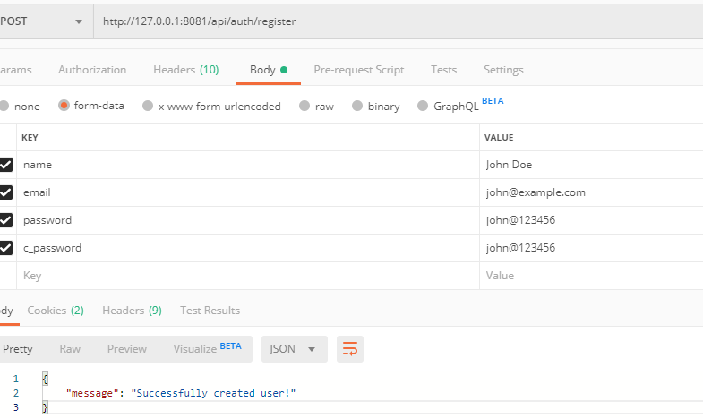
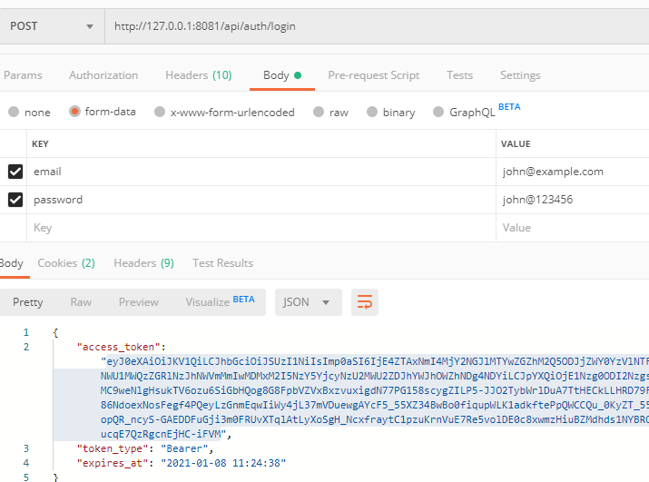
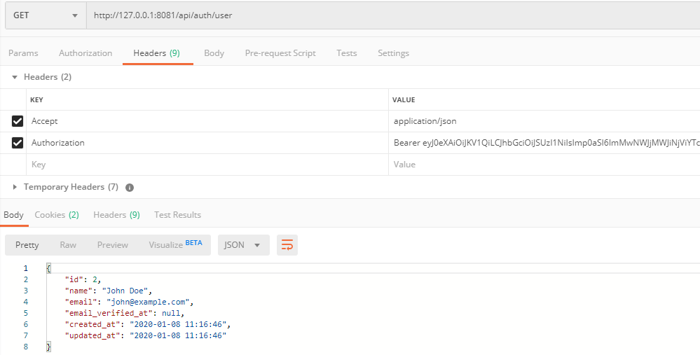

Passport Authentication
Below are some authentications sample code to authenticate users via Laravel Passport
Step 1: Create Route
Open api.php from routes folder , and replace the code of route with the following:
<?php
use Illuminate\Http\Request;
use Illuminate\Support\Facades\Route;
use App\Http\Controllers\AuthController;
/*
|--------------------------------------------------------------------------
| API Routes
|--------------------------------------------------------------------------
|
| Here is where you can register API routes for your application. These
| routes are loaded by the RouteServiceProvider within a group which
| is assigned the "api" middleware group. Enjoy building your API!
|
*/
Route::group([
'prefix' => 'auth'
], function () {
Route::post('login', [AuthController::class, 'login']);
Route::post('register', [AuthController::class, 'register']);
Route::group([
'middleware' => 'auth:api'
], function () {
Route::get('logout', [AuthController::class, 'logout']);
Route::get('user', [AuthController::class, 'user']);
});
});
Step 2: Create Controller
Create new controller in Http/Controllers/AuthController.php by the following command:
php artisan make:controller AuthController
NOTE - Now, We will create APIs and to test those APIs one can use tools like
POSTMAN. We have attached images showing the
API test results using POSTMAN.
Step 3: Register User API
Open Http/Controllers/AuthController.php and replace the code with below code:
<?php
namespace App\Http\Controllers;
use Illuminate\Http\Request;
use Illuminate\Support\Facades\Auth;
use Carbon\Carbon;
use App\User;
use Validator;
class AuthController extends Controller
{
/**
* Create user
*
* @param [string] name
* @param [string] email
* @param [string] password
* @param [string] password_confirmation
* @return [string] message
*/
public function register(Request $request)
{
$request->validate([
'name' => 'required|string',
'email' => 'required|string|email|unique:users',
'password' => 'required|string|',
'c_password'=>'required|same:password',
]);
$user = new User([
'name' => $request->name,
'email' => $request->email,
'password' => bcrypt($request->password)
]);
if($user->save()){
return response()->json([
'message' => 'Successfully created user!'
], 201);
}else{
return response()->json(['error'=>'Provide proper details']);
}
}
}
TEST register user API using postman

Step 4: Login User API
In the same file Http/Controllers/AuthController.php, add below code after register method:
/**
* Login user and create token
*
* @param [string] email
* @param [string] password
* @param [boolean] remember_me
* @return [string] access_token
* @return [string] token_type
* @return [string] expires_at
*/
public function login(Request $request)
{
$request->validate([
'email' => 'required|string|email',
'password' => 'required|string',
'remember_me' => 'boolean'
]);
$credentials = request(['email', 'password']);
if(!Auth::attempt($credentials))
return response()->json([
'message' => 'Unauthorized'
], 401);
$user = $request->user();
$tokenResult = $user->createToken('Personal Access Token');
$token = $tokenResult->token;
if ($request->remember_me)
$token->expires_at = Carbon::now()->addWeeks(1);
$token->save();
return response()->json([
'access_token' => $tokenResult->accessToken,
'token_type' => 'Bearer',
'expires_at' => Carbon::parse(
$tokenResult->token->expires_at
)->toDateTimeString()
]);
}
TEST Login user API using postman

Step 5: Get User API
In the same file Http/Controllers/AuthController.php, add below code after Login method:
/**
* Get the authenticated User
*
* @return [json] user object
*/
public function user(Request $request)
{
return response()->json($request->user());
}
TEST get user API using postman

Step 6: Logout User API
In the same file Http/Controllers/AuthController.php, add below code after User method:
/**
* Logout user (Revoke the token)
*
* @return [string] message
*/
public function logout(Request $request)
{
$request->user()->token()->revoke();
return response()->json([
'message' => 'Successfully logged out'
]);
}
TEST logout user API using postman
